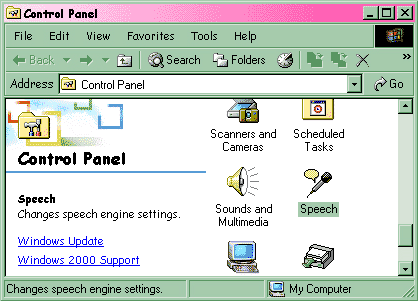
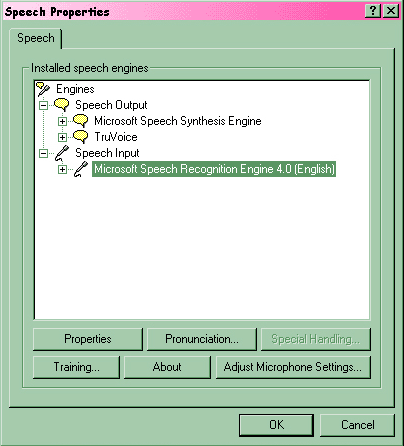
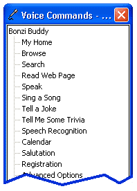

Important!
Hold down Control (CTRL) and press "D" to bookmark this page for future reference! BonziBUDDY™ Talking Module The BonziBUDDY Talking Module, when properly installed and set up, will allow you to speak commands to Bonzi, answer his questions, and interact with him in different ways. Ask Bonzi how he's doing today, and he'll reply to you as only an Internet traveling companion can! The Talking Module is the most popular add-on module that we have created for BonziBUDDY. How does the
Talking Module work? The Talking Module uses Microsoft's Speech Recognition Engine version 4.0 to train Bonzi how to understand your voice. After installing the Talking Module you will be walked through setting up your microphone and reading several paragraphs of text to teach the speech engine how to understand your specific voice patterns. The more training that you do, the better the speech engine works. Once the speech engine is trained, it's as easy as holding down your Scroll Lock key on your keyboard until you see a small window pop up under Bonzi that says "Bonzi is listening." Once you see this message, speak the pre-set list of commands that BonziBUDDY can understand, and Bonzi will understand what you have asked him to do.
Does the BonziBUDDY™ Talking Module have any special requirements? This module will work with most current versions of Windows (95, 98, ME, NT, 2000, and XP). The module requires that you have a sound card on your computer that contains a microphone input jack (almost all computers have this installed before you buy them) and a good microphone to plug into that jack. Close-talk microphone headsets work the best (the ones with a foam ball over the microphone that sits just under your mouth, close to your chin), but small boom-type microphones that sit on your desk and point up toward your mouth should work as well. Microphones that are connected to the computer or to the monitor will not work as well, but might be sufficient.
Is the Talking Module compatible with America Online (AOL)? Absolutely! The Talking Module will work with any ISP (Internet Service Provider) because it is one of the very few modules for BonziBUDDY that does not rely on your Internet connection. The Talking Module will work just as well when you are NOT connected to the Internet, as it does when you are connected to the Internet. Note, however, that some of the commands that you can speak to your BonziBUDDY (such as asking him to Search or Browse the Internet) will require that your Internet connection is open.
We're ready to install the Talking Module! If you're reading this you are either a BonziBUDDY Gold Member or you have received an e-mail from us that has a web page address and an access code number on it. Depending on which of these fits your situation, you now need to follow the instructions that you have been given. GOLD MEMBERS: right-click on your BonziBUDDY and choose Gold Member Access. Highlight Talking Module in the list and click the Add button to transfer Talking Module to the list on the right side of the screen. When it is on the right, click on the Install Now button to install the Talking Module. NON-GOLD MEMBERS and ACCESS CODE users: at this time, go ahead and follow the instructions you were given to download the program. When you're finished with your download, return to this page to make sure that you have completed the Talking Module Setup! If you need an access code, send an e-mail to your Talking Module customer number @bonzi.com. This will automatically send you back an access code to use for the download! Now we're ready to set up the microphone and train the speech engine to know your voice! Once the Talking Module is installed, BonziBUDDY will break into a long speech about the module and how to use it. He should also walk you through the settings for your microphone and the voice training. If he has already done this, you can skip to the "Operating the Talking Module" section below. If he didn't, or if you need to train the speech engine again, keep reading below. Go to Start, click on Settings, and click on Control Panel. When the Control Panel is open, double click on the Speech icon, as shown below:  You should now see this window on your screen:  On this window, highlight the Microsoft Speech Recognition Engine 4.0 (English) and click on the Training button. When you do so, the speech engine will take you through the wizard that will adjust your microphone and train your voice to be understood by the speech engine. It is important that you pay attention and follow the directions for this wizard to work properly. Make sure that you get all the way through the microphone setup and voice training wizard before moving on to the next section, Operating the Talking Module. Operating the Talking Module Now that you've been through the training for Bonzi's Talking Module, you are ready to use it! To put Bonzi in "listening mode" all you need to do is hold down your Scroll Lock key for a few seconds until you see a small box pop up under Bonzi that says, "Bonzi is listening." Once you see this small box, you can speak a command to Bonzi! To see the list of commands that you can speak to Bonzi, right click on him and choose "My Voice Commands." When you do so, the voice commands window will open and show you the words that you can speak to Bonzi:  You can also answer "Yes" or "No" to the questions that Bonzi asks you about other products and services to reply to what he is asking. That is about all there is to the Talking Module for BonziBUDDY! If you need further assistance or you cannot follow these instructions, please Contact Technical Support. For more online help with the Talking Module, please visit us on the web at http://www.bonzi.com/support/bb1support.htm. We look forward to hearing from you! Sincerely, The
BONZI Software Customer Support Team |